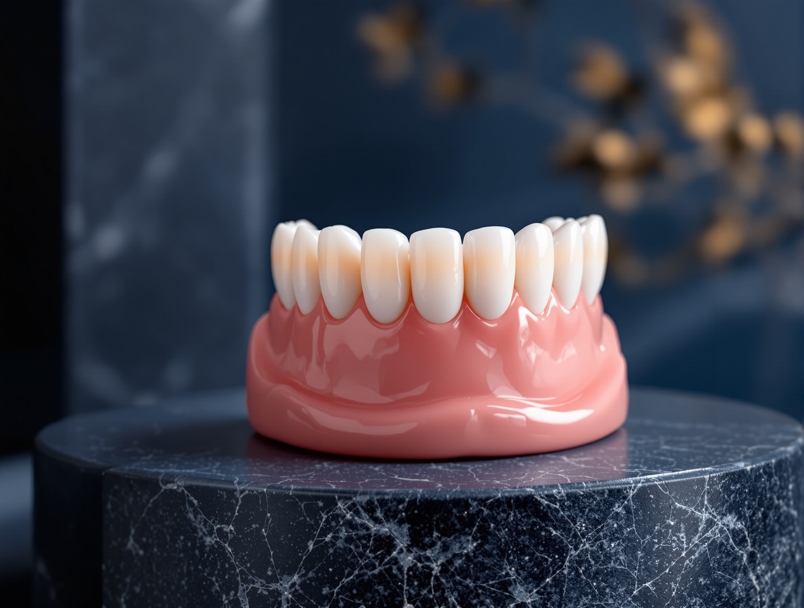
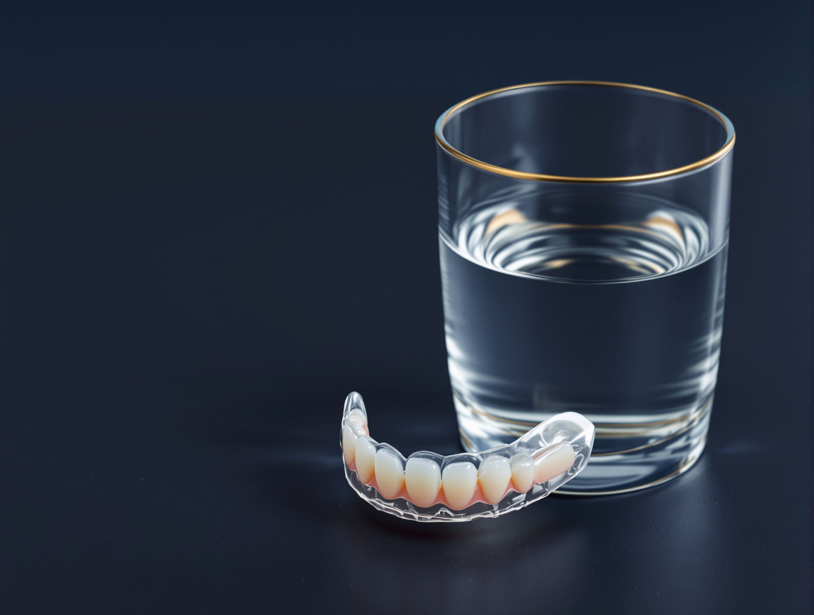

Complete Dentures in the Philippines
Complete dentures, prosthodontics
A complete denture replaces every tooth in your upper or lower jaw.
What this page covers
Eight stages, and stage 04 is the one where the decision becomes yours.
The teeth are set in wax and shown to you in a mirror before anything is processed. Changes cost nothing at that appointment and a great deal after it, which makes it the single most important hour in the whole course.

- What it is made of. The acrylic, why upper and lower behave differently, and the choice between healing first and never going without. Go to stage 01
- Who it fits. The cases it answers, and three situations where something else is the honest recommendation. Go to stage 02
- The appointments. Seven steps across four to eight weeks, and the bench work that spaces them out. Go to stage 03
- Where you get the veto. A mirror, a rehearsal in wax, and what "approved" actually commits you to. Go to stage 04
- The bench. The specialty this belongs to, and why the person who plans it also fits it. Go to stage 05
- The instruments. Three named systems out of the eight this practice runs, and what each contributes. Go to stage 06
- The fee. An anchor figure, five things that move it, and the one way this clinic is paid. Go to stage 07
- Answers and daily care. Eight real questions, why it comes out at night, and why you still need check-ups. Go to stage 08
The appliance, and two ways to get one
A complete denture replaces every tooth in one jaw.
The base is a gum-colored acrylic shaped to sit against your ridge, carrying units placed where your own teeth once sat. An upper holds by suction across the palate. A lower rests on the ridge and is held by the muscles of the tongue and cheeks, which is why the two behave differently in the mouth and why expectations of them should differ too.
A conventional one is made after the extraction sites have healed, usually eight to twelve weeks, so the fit is taken against settled tissue. An immediate one is made in advance and inserted on the day the teeth come out, so you are never without teeth, then relined once the ridge has finished changing shape.
The problem it solves is functional before it is cosmetic.
Missing a full arch changes what you can chew, how you sound on certain consonants, and how the lower third of your face is supported. This restores all three, and it can be adjusted, relined and remade as the ridge changes over the years.

Next
Stage 02, whether this is your treatment at all, and the three situations where the honest recommendation is something else.
Whether this is your treatment
This suits you if every tooth in an arch is missing, or if the remaining teeth are beyond restoring and are due for extraction.
It also suits patients who cannot have implants placed, whether because of bone volume, a medical condition, or a decision not to have surgery. It is a reasonable first step even when implants are the eventual goal, because one can be worn while bone grafts heal, then converted or replaced later.
Where this is not the right answer
- You still have sound, restorable teeth in the arch. Keeping them is almost always the better outcome, and a removable partial or a bridge is the correct treatment instead.
- Your priority is a replacement that does not move at all. A conventional lower will disappoint you. An implant-retained overdenture is the honest alternative to discuss, and it is discussed rather than sold.
- You have an active gum infection or untreated decay elsewhere. That is treated first, before any impression is taken.
We will say so at the consultation if this is not what your case needs. A prosthodontist assesses the ridges, the remaining bone and whatever bites against them before recommending anything.

Next
Stage 03, the appointments themselves, and the bench work that fills the gaps between them.
The appointments
Most cases run to five or six appointments across four to eight weeks, spaced by the laboratory work between them.
Cases involving extractions, same-day fitting or a reline take longer, and the plan you receive at consultation states the sequence for your case specifically rather than quoting the average above.

| Step | What happens | How long |
|---|---|---|
| 01 Consultation and assessment | Clinical examination, radiographs, and an assessment of the ridge, the soft tissue and the opposing arch. Any extractions or preliminary treatment are planned here, and the costing is handed to you at this appointment. | 45 to 60 minutes |
| 02 Primary impressions | A first impression of each arch, from which a custom tray is made to your own anatomy rather than a stock tray. | 30 minutes |
| 03 Definitive impressions | The custom tray records the full denture-bearing area, including the border seal that gives an upper its suction. | 30 to 45 minutes |
| 04 Jaw relation records | Wax rims establish the height of the bite, the midline, the lip support, and the shade and shape of the teeth. This appointment decides how the finished result will look. | 30 to 45 minutes |
| 05 Wax try-in | A rehearsal in wax, so you can see and approve the result before processing. This step has a stage of its own immediately after this table. | 30 to 45 minutes |
| 06 Insertion | The finished appliance is fitted, the bite is checked, and pressure points are relieved. | 45 to 60 minutes |
| 07 Review and adjustment | New appliances settle. Sore spots are normal in the first fortnight and are relieved by adjustment, not by leaving it out. | Two or three short visits over a month |
Next
Stage 04, step 05 above, taken out of the table and given a band of its own because of what it commits you to.
Where you get the veto
What you approve in wax is what is delivered in acrylic.
A case is judged at the wax try-in, not after it is processed. That appointment is where the tooth position, the midline, the lip support and the shade are agreed with you in front of a mirror, and where changes still cost nothing. Take your time there. It is the hour that decides the result, and it is the last hour in which decisions are free.
Fit is judged over the following month rather than on the day. Tissue settles, the bite beds in, and two or three short adjustment visits are part of the treatment rather than a sign that something went wrong.
No warranty period, free-remake window or durability commitment is stated anywhere on this page.
Next
Stage 05, the specialty this work belongs to, and why the clinician who plans your case is the one who fits it.
One specialty, start to finish
This is prosthodontics, the recognized dental specialty concerned with replacing missing teeth and restoring the bite.
It is practiced in house here by specialists who do this work as their main clinical discipline. You are not sent to another practice to have the appliance made, and the clinician who plans your case is the clinician who fits it.
That continuity matters more on this treatment than on most, because the jaw relation records taken at one appointment and the try-in judged at the next are the same person's reading of the same face.
Next
Stage 06, three named systems out of the eight this practice runs, and what each one contributes to a full-arch case.
Three of the eight systems
Our clinics run eight named systems. These three are the ones that touch this treatment, and the other five are not listed here because they do not.
We name the systems because a name can be checked. An adjective cannot.
iTero intraoral scanner
Captures digital records of the arches and the opposing teeth. A digital record can be re-sent to the laboratory without recalling you for a second impression, which on a five-appointment course is one visit you do not have to make.
Named installed systemOccluSense bite analysis
A pressure-mapping system showing where and how hard each contact lands, in sequence, on a screen. On a complete set the bite is the difference between one you forget you are wearing and one that rocks, and this turns that adjustment from a feel into a reading.
Named installed system3D CBCT imaging
Shows the remaining bone in three dimensions, which matters when the ridge is resorbed, when extractions are planned in the same course, or when you want to know whether implant retention is realistic later rather than being told it might be.
All four clinicsNext
Stage 07, the money: an anchor figure, the five things that move it, and how payment works here.
What it costs
Per arch. Anchored to published market ranges, not to an Elevate price list.
Every peso amount on this page is representative and anchored to published market ranges, not a price quoted by this practice. The figure you pay is quoted after a clinical assessment.
What moves the final figure
- Number of arches. Upper only, lower only, or both.
- Preliminary treatment. Extractions, surgical reduction of the ridge, or work on the teeth above are quoted separately rather than folded in.
- Type. Fitting on extraction day involves an additional reline once healing is complete.
- Materials. The grade of acrylic and the tooth set specified, and whether a metal-reinforced base is indicated.
- Case complexity. A severely resorbed ridge, a difficult bite relationship or a remake takes more appointments.
We do not quote this treatment without examining it.
The exact figure is confirmed in writing at your consultation, after the clinical assessment.
How you pay
Elevate Dental does not accept HMO or dental insurance. All treatment is self-pay.
HMO coverage cannot be used for dental treatments at our clinics. It is stated here, in the stage where the money is discussed, because finding it out late is worse than reading it now.
Bring your current appliance if you have one, and any previous radiographs. Both change what the assessment can tell you on the day.
Next
Stage 08, the last one: the questions people actually ask, and the daily care that keeps the tissue underneath healthy.
Questions, and daily care

Before you commit
How long will I be without teeth?
If it is planned for extraction day, you are not: it goes in as the teeth come out. If a conventional course is planned, the healing period is usually eight to twelve weeks, and that timing is agreed with you before any extraction is booked.
Will it hurt?
Fitting one is not a surgical procedure. Any extractions are carried out under a local anesthetic. Sore spots in the first two weeks of wearing a new appliance are common and are relieved by adjustment at a short review visit, so book the review rather than leaving it out.
Will I be able to eat normally?
Not immediately. Start with soft food cut small, chew on both sides at once rather than one side, and reintroduce harder textures over the first few weeks. Most patients notice the largest change during the first month.
Will it change how I speak?
Some sounds, particularly s and f, take practice. Reading aloud for a few minutes a day speeds it up, and most people settle within one to two weeks.
Living with it
How long does one last?
These wear and the ridge underneath keeps changing shape, so this is a maintained appliance rather than a one-time purchase. Plan on a reline when the fit loosens and a review at least once a year. How long yours serves depends on your tissue, your bite and your care of it, and no term is promised on this page because none has been supplied.
Do I take it out at night?
Yes, unless your prosthodontist tells you otherwise. Leaving it out gives the tissue several hours to recover and reduces the risk of denture stomatitis.
Do I still need check-ups with no natural teeth?
Yes. The annual review checks the fit, the bite, the condition of the ridge and the soft tissue, including a screening of the oral mucosa. That examination does not depend on having teeth.
What if the fit changes?
That is expected rather than exceptional, because the ridge continues to remodel. A reline restores the fit against the changed tissue, and it is a planned maintenance step rather than evidence that anything failed.
Daily care
- Brush it every day over a basin of water with a denture brush and soap or a denture cleaner.
- Never use abrasive toothpaste on it.
- Soak it overnight in a denture solution or plain water.
- Do not use hot water, which distorts acrylic.
- Clean your gums, tongue and palate with a soft brush each morning.
Your first consultation includes the clinical assessment, the treatment plan and the written quote, at any of our four Metro Manila clinics.
The route ends here on purpose. If a band raised something this page did not settle, bring it to the assessment and it will be answered against your own ridges rather than against a web page.
Outcome
- Feature. A complete upper or lower set at the representative per-arch figure in stage 07, planned and fitted by a prosthodontics specialist.
- Do. Book a free consultation and get a written quote.
- Means. You approve the result in wax, in front of a mirror, before it is made.